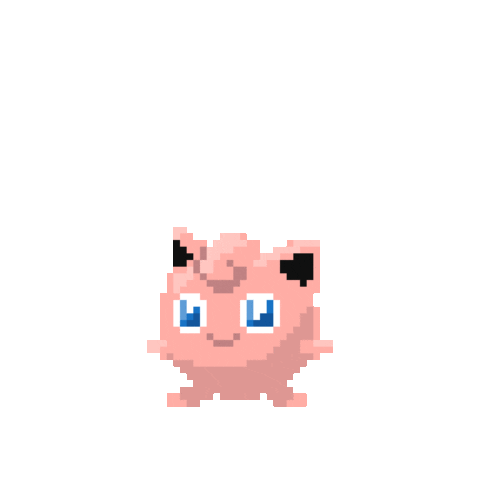
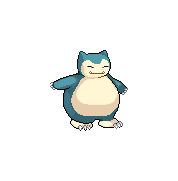
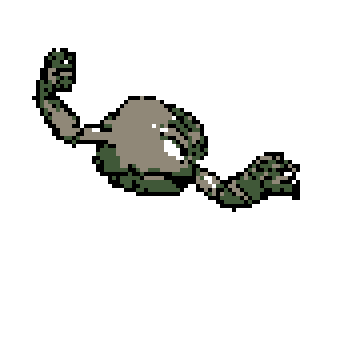
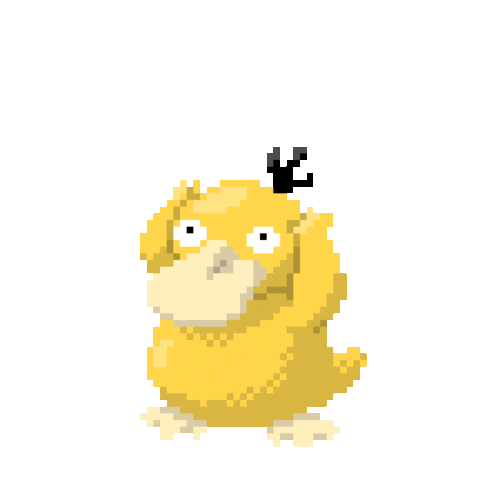
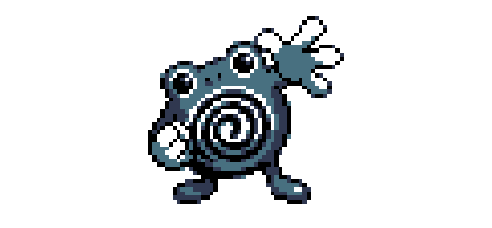

Jigglypuff
Type: Normal Fairy
Jigglypuff (Japanese: プリン Purin) is a dual-type Normal/Fairy Pokémon introduced in Generation I. Prior to Generation VI, it was a pure Normal-type Pokémon.

Snorlax
Type: Normal
Snorlax (Japanese: カビゴン Kabigon) is a Normal-type Pokémon introduced in Generation I.

Geodude
Type: Rock Ground
Geodude (Japanese: イシツブテ Isitsubute) is a dual-type Rock/Ground Pokémon introduced in Generation I.

Meowth
Type: Normal
Meowth (Japanese: ニャース Nyarth) is a Normal-type Pokémon introduced in Generation I.

Psyduck
Type: Water
Psyduck (Japanese: コダック Koduck) is a Water-type Pokémon introduced in Generation I.

Poliwhirl
Type: Water
Poliwhirl (Japanese: ニョロゾ Nyororo) is a Water-type Pokémon introduced in Generation I.